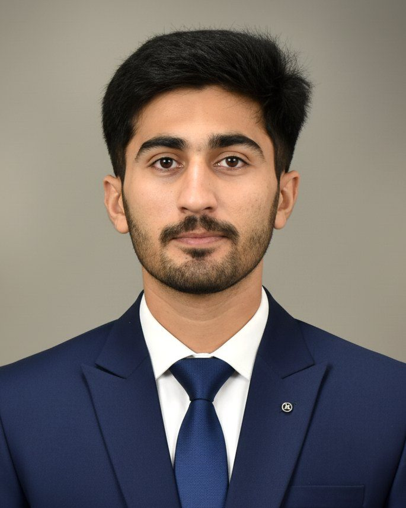
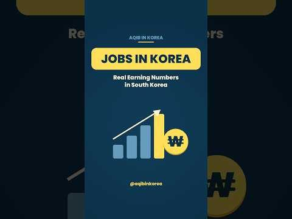
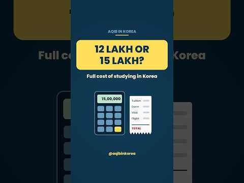
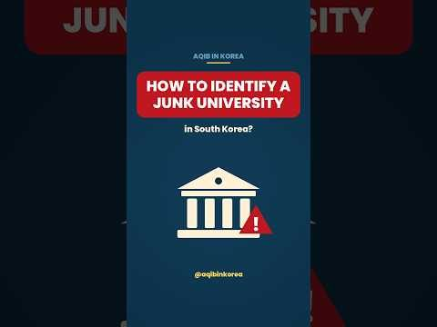
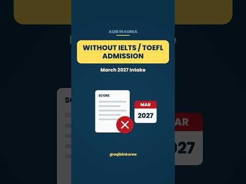
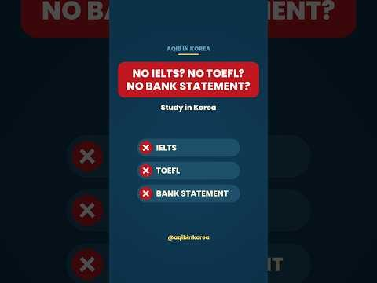

Jobs and Earnings
A detailed explanation about jobs for Bachelors and Masters students, and earnings.
Watch videoPractical guidance, university information and admission support to help international students pursue higher education in South Korea.
Results appear below as you type.
Check a university before you apply.
You apply straight to the university and handle your own application.
I charge nothing for my guidance when you handle your application yourself.
I assist you at each step, from choosing a program to your documents and deadlines.
I am not a consultant who applies on your behalf. You stay in control of your own application.
Some universities accept applications directly. Others hand their admission process to an authorised Korean company. At those universities, the company handles your admission whether you apply yourself or through an agent. If you apply through the university's authorised company yourself, you save the fee you would otherwise pay a consultant or agent.
March 2027 intake
Choose a university to see its degrees, courses, fees and requirements.
Busan 부산
6 courses including School of Business, Maritime Economics and Finance, AI and Software Engineering and more
DeadlineNov 15, 2026
Explore DetailsBusan 부산
12 courses including Integrated Business Management (IBM), Global Media (GM), Global Advanced Integrated Engineering (GAIE) and more
DeadlineDec 20, 2026
Explore DetailsBusan 부산
10 courses including Korean Language and Business, Computer Science, Film and Visual Effects and more
DeadlineDec 27, 2026
Explore DetailsDaejeon 대전
26 courses including Business Administration, Artificial Intelligence (AI), Data Science and more
DeadlineJan 10, 2027
Explore DetailsSuwon 수원
1 course including International Business
DeadlineNov 15, 2026
Explore DetailsSeoul 서울
65 courses including Public Administration, Media and Communication, Business Administration and more
DeadlineNov 11, 2026
Explore DetailsGoseong, Sokcho 고성 · 속초
12 courses including Artificial Intelligence (AI), Hospitality and AI Innovation (HAI), International Business Administration (IBA) and more
DeadlineDec 15, 2026
Explore DetailsGangneung 강릉
4 courses including Global Business, Global Tourism Management, Korean Language and more
DeadlineJan 8, 2027
Explore DetailsSeoul 서울
1 course including Master of AI Convergence Studies
DeadlineJan 5, 2027
Explore Details8 universities
44 courses
View Bachelors7 universities
57 courses
View Masters5 universities
48 courses
View PhDExplore universities and programs.
Check admission requirements.
Prepare your documents.
Submit your university application.
Complete the admission and visa process.
A short general guide for first-time applicants.
Korean universities run two main semesters. The spring semester starts in March and the fall semester starts in September, with summer and winter vacations in between.
March is the start of the Korean academic year, so applications for it close in the months before.
IELTS and TOEFL iBT are the English tests most programs taught in English ask for.
TOPIK is the Test of Proficiency in Korean. It has six levels, with Level 1 the lowest and Level 6 the highest.
International students on degree programs study on a D-2 visa. Students on university language courses usually hold a D-4 visa.
Immigration normally asks for proof of admission and proof of funds, which is why several universities list a bank balance requirement.
Korea's currency is the won (KRW). Tuition is charged per semester at most universities, so a year costs about two semesters of fees unless the list says the fee is annual.
USD figures in the list are approximate conversions.
Most scholarships here are a percentage off tuition. The first semester is usually set by your English or Korean test score. Later semesters depend on your grades.
University dormitories are the simplest first home in Korea. Check three things in each listing: the period covered, whether meals are included, and whether there is a kitchen.

Hi, I'm
My Mission
My goal is to make studying in South Korea more accessible and affordable for international students. As a Master's student at Kyungdong University, I share practical guidance, authentic experiences, and up-to-date information about university admissions, scholarships, and student life in Korea. I aim to help students apply directly to universities, understand the admission process, and avoid unnecessary consultation fees so they can make informed decisions and save money along the way.
If you find my content helpful, please support my work by subscribing to my YouTube channel, liking, commenting on, and sharing my videos. I share practical information, real experiences, and the latest updates to help you pursue your study journey in South Korea.
Choose a topic and watch it right here.






Questions about a program, a scholarship or your documents? Message me directly, or follow my channels for updates.
Choose a university to see its degrees and courses.
Busan 부산
6 courses including School of Business, Maritime Economics and Finance, AI and Software Engineering and more
DeadlineNov 15, 2026
Explore DetailsBusan 부산
12 courses including Integrated Business Management (IBM), Global Media (GM), Global Advanced Integrated Engineering (GAIE) and more
DeadlineDec 20, 2026
Explore DetailsBusan 부산
10 courses including Korean Language and Business, Computer Science, Film and Visual Effects and more
DeadlineDec 27, 2026
Explore DetailsDaejeon 대전
26 courses including Business Administration, Artificial Intelligence (AI), Data Science and more
DeadlineJan 10, 2027
Explore DetailsSuwon 수원
1 course including International Business
DeadlineNov 15, 2026
Explore DetailsSeoul 서울
65 courses including Public Administration, Media and Communication, Business Administration and more
DeadlineNov 11, 2026
Explore DetailsGoseong, Sokcho 고성 · 속초
12 courses including Artificial Intelligence (AI), Hospitality and AI Innovation (HAI), International Business Administration (IBA) and more
DeadlineDec 15, 2026
Explore DetailsGangneung 강릉
4 courses including Global Business, Global Tourism Management, Korean Language and more
DeadlineJan 8, 2027
Explore DetailsSeoul 서울
1 course including Master of AI Convergence Studies
DeadlineJan 5, 2027
Explore DetailsChoose a degree level to see which universities offer it.
Search by course name, or narrow the list by location and degree. Select a course to see fees, requirements and scholarships.
No course matches these filters. Clear the search box or choose All.
Busan 부산
Choose a degree to see its courses, fees and requirements.
Busan 부산
Tongmyong University
The button opens the university's own application site, so you can apply yourself.
The deadline on this page has passed. The university's site shows its next intake.
Official link, checked Nov 21, 2026
| Available Programs | Tuition Fee (per semester) | |
|---|---|---|
| KRW | USD (Approx.) | |
| School of Business• Marketing• International Business & Management• Supply Chain Management• AI & Intelligent Business Systems• Advance Financial Literacy | 3,000,000 KRW | 2,250 USD |
| Maritime Economics and Finance | 3,000,000 KRW | 2,250 USD |
| AI and Software Engineering(Blockchain + DeFi) | 4,150,000 KRW | 3,100 USD |
| Mechanical and Automotive Engineering | 4,150,000 KRW | 3,100 USD |
• High School/ Equivalent Completion • IELTS 5.5 or iBT TOEFL 80
First Semester: • IELTS 5.5 / iBT TOEFL 80 = 40% scholarship • IELTS 6.0 / iBT TOEFL 85 = 50% scholarship • IELTS 6.5 / iBT TOEFL 90 = 70% scholarship • IELTS 7.5 / iBT TOEFL 105 = 100% scholarship From 2nd Semester: Depends on GPA in previous semester (details TBC)
Available 1,900,000 KRW (approx. 1,450 USD) for 6 months (1 semester + 2 months holiday) Kitchen/cooking facility available 2x meals a day from Monday-Friday No meals on weekends & holidays (Not optional)
KRW70,000 KRW
USD (Approx.)55 USD
X
No
Nov 15, 2026
Other degrees at this university: Masters
Busan 부산
Tongmyong University
The button opens the university's own application site, so you can apply yourself.
The deadline on this page has passed. The university's site shows its next intake.
Official link, checked Nov 21, 2026
| Available Programs | Tuition Fee (per semester) | |
|---|---|---|
| KRW | USD (Approx.) | |
| Global Business• Global Business and Logistics Major• Port/Logistics Management Major | 2,852,000 KRW | 2,200 USD |
| AI Convergence | 3,661,000 KRW | 2,800 USD |
• Bachelors Degree/Equivalent • IELTS 5.5 or iBT TOEFL 80
First Semester: • IELTS 5.5 / iBT TOEFL 80 = 30% scholarship From 2nd Semester: • IELTS 5.5 / iBT TOEFL 80 = 20% scholarship • IELTS 6.0 / iBT TOEFL 85 = 30% scholarship
Available 1,900,000 KRW (approx. 1,450 USD) for 6 months (1 semester + 2 months holiday) Kitchen/cooking facility available 2x meals a day from Monday-Friday No meals on weekends & holidays (Not optional)
KRW70,000 KRW
USD (Approx.)55 USD
KRW550,000 KRW
USD (Approx.)450 USD
Available (E-Visa) Visa fee applies
Nov 15, 2026
Other degrees at this university: Bachelors
Busan 부산
Choose a degree to see its courses, fees and requirements.
4 courses
Integrated Business Management (IBM), Global Media (GM), Global Advanced Integrated Engineering (GAIE) and more
DeadlineDec 20, 2026
View courses8 courses
English Language and Literature, Public Administration, Public Policy and Public Relations (★PhD Only) and more
DeadlineDec 20, 2026
View coursesBusan 부산
Dong-A University
The button opens the university's own application site, so you can apply yourself.
The deadline on this page has passed. The university's site shows its next intake.
Official link, checked Nov 21, 2026
| Available Programs | Tuition Fee (per semester) | |
|---|---|---|
| KRW | USD (Approx.) | |
| Integrated Business Management (IBM) | 3,857,000 KRW | 2,900 USD |
| Global Media (GM) | 3,857,000 KRW | 2,900 USD |
| Global Advanced Integrated Engineering (GAIE) | 4,608,800 KRW | 3,500 USD |
| Global IT (GIT) | 4,608,800 KRW | 3,500 USD |
• High School/Equivalent Completion • IELTS 5.5 or iBT TOEFL 59
First Semester: • IELTS 5.5 / iBT TOEFL 3.5 = 15% scholarship • IELTS 6.0 / iBT TOEFL 4.0 = 25% scholarship • IELTS 6.5 / iBT TOEFL 4.5 = 50% scholarship • IELTS 7.0 / iBT TOEFL 5.0 = 100% scholarship From 2nd Semester: • All international students = 25% scholarship • Top 40% ranking = 40% scholarship • Top 20% ranking = 60% scholarship • Top 5% ranking = 100% scholarship
Available • Male: 1,070,000 KRW (approx. 900 USD) • Female: 939,000 KRW (approx. 800 USD) For 1 semester (around 4 months) No kitchen/cooking facility at all Meals available optionally (additional charge)
KRW60,000 KRW
USD (Approx.)50 USD
X
No
Dec 20, 2026
Other degrees at this university: Masters & PhD
Busan 부산
Dong-A University
The button opens the university's own application site, so you can apply yourself.
The deadline on this page has passed. The university's site shows its next intake.
Official link, checked Nov 21, 2026
| Available Programs | Tuition Fee (per semester) | |
|---|---|---|
| KRW | USD (Approx.) | |
| English Language and Literature• Linguistics Major• Literature Major• Education Major | Masters Program: 4,618,000 KRW PhD Program: 4,799,000 KRW | Masters Program: 3,500 USD PhD Program: 3,600 USD |
| Public Administration• Organization Management Major• Financial Administration Major• Local Administration and Urban Policy Major | Masters Program: 4,618,000 KRW PhD Program: 4,799,000 KRW | Masters Program: 3,500 USD PhD Program: 3,600 USD |
| Public Policy and Public Relations (★PhD Only) | Masters Program: 4,618,000 KRW PhD Program: 4,799,000 KRW | Masters Program: 3,500 USD PhD Program: 3,600 USD |
| Sociology• Industrial Society Major• Social Class and Social Change Major | Masters Program: 4,618,000 KRW PhD Program: 4,799,000 KRW | Masters Program: 3,500 USD PhD Program: 3,600 USD |
| Mathematics• Analysis Major• Algebra Major• Geometry and Topology Major• Applied Mathematics and Statistics Major | Masters Program: 5,480,000 KRW PhD Program: 5,765,000 KRW | Masters Program: 4,100 USD PhD Program: 4,300 USD |
| Fashion and Textiles | Masters Program: 5,480,000 KRW PhD Program: 5,765,000 KRW | Masters Program: 4,100 USD PhD Program: 4,300 USD |
| ICT Integrated Ocean Smart City Engineering(Integration majors in Architecture, Civil, and Electronics Engineering) | Masters Program: 6,149,000 KRW PhD Program: 6,478,000 KRW | Masters Program: 4,600 USD PhD Program: 4,900 USD |
| Smart Convergence System Engineering• Industrial & Management Engineering Major• Mechanical Engineering Major• Materials Science & Engineering Major• Computer Engineering Major• Electronics Engineering Major• Electrical Engineering Major• Health Care Engineering Major• Food Science & Nutrition Engineering Major• Physical Education Engineering Major | Masters Program: 6,149,000 KRW PhD Program: 6,478,000 KRW | Masters Program: 4,600 USD PhD Program: 4,900 USD |
Masters Program: • Bachelors Degree/Equivalent • IELTS 5.5 / iBT TOEFL 59 PhD Program: • Bachelor’s Degree/Equivalent • Masters Degree/Equivalent • IELTS 5.5 / iBT TOEFL 59 • Research Proposal • List of Research Output (if applicable)
• IELTS 5.5 / iBT TOEFL 59 (3.5) = 50% scholarship • IELTS 6.5 / iBT TOEFL 86 (4.5) = 70% scholarship
Available • Male: 1,070,000 KRW (approx. 900 USD) • Female: 939,000 KRW (approx. 800 USD) For 1 semester (around 4 months) No kitchen/cooking facility at all Meals available optionally (additional charge)
KRWMasters Program: 70,000 KRW PhD Program: 80,000 KRW
USD (Approx.)Masters Program: 55 USD PhD Program: 65 USD
KRW692,000 KRW
USD (Approx.)520 USD
Available (E-Visa) Visa fee applies
Dec 20, 2026
Other degrees at this university: Bachelors
Busan 부산
Choose a degree to see its courses, fees and requirements.
3 courses
Korean Language and Business, Computer Science, Film and Visual Effects
DeadlineDec 27, 2026
View courses4 courses
Business Administration, Computer Engineering, Digital Forensics and more
DeadlineDec 27, 2026
View courses3 courses
Business Administration, Computer Engineering, Visual Contents
DeadlineDec 27, 2026
View coursesBusan 부산
Dongseo University
| Available Programs | Tuition Fee (per semester) | |
|---|---|---|
| KRW | USD (Approx.) | |
| Korean Language and Business | 3,007,000 KRW | 2,300 USD |
| Computer Science | 4,110,000 KRW | 3,100 USD |
| Film and Visual Effects | 4,110,000 KRW | 3,100 USD |
• High School/ Equivalent Completion • IELTS 5.5 or iBT TOEFL 59 • Tuberculosis Test & Measles Vaccination (2 shots)
First Semester: • IELTS 5.5 / iBT TOEFL 59 (3.5) = 20% scholarship + dorm for 1 semester • IELTS 6.5 / iBT TOEFL 80 (4.5) = 30% scholarship + dorm for 1 semester • IELTS 7.0 / iBT TOEFL 95 (5.0) = 60% scholarship + dorm for 2 semesters • IELTS 7.5 / iBT TOEFL 104 (5.5) = 100% scholarship + dorm for 4 semesters (dorm allowance exclude vacation periods) From 2nd Semester: • GPA above 2.5 = 20% scholarship • Top 25% GPA ranking = 50% scholarship • Top 10% GPA ranking = 70% scholarship
Available • Global Village Double Room: 850,000 KRW (approx. USD) for 1 semester No kitchen facility Swimming pool & fitness center available • International House 1 Double Room: 660,000 KRW (approx. USD) for 1 semester Triple Room: 600,000 KRW (approx. USD) for 1 semester Cooking facility available No swimming pool & fitness center Shared bathroom • International House 2 Double Room: 800,000 KRW (approx. USD) for 1 semester Cooking facility available No swimming pool & fitness center All dormitories cost 550,000 KRW (approx. USD) for the holidays PhD students are provided complimentary dormitory for the first year (2 semesters + 2 holiday periods)
KRW60,000 KRW
USD (Approx.)50 USD
KRW115,000 KRW
USD (Approx.)90 USD
No
Dec 27, 2026
Busan 부산
Dongseo University
| Available Programs | Tuition Fee (per semester) | |
|---|---|---|
| KRW | USD (Approx.) | |
| Business Administration | 4,057,000 KRW | 3,100 USD |
| Computer Engineering | 5,428,000 KRW | 4,100 USD |
| Digital Forensics | 5,428,000 KRW | 4,100 USD |
| Visual Contents• Film Major• VFX Major• Animation Major• Digital Media Art Major• Game Major | 5,505,000 KRW | 4,200 USD |
• Bachelors Degree • IELTS 5.5 or iBT TOEFL 59 • Tuberculosis Test & Measles Vaccination (2 shots)
N/A
Available • Global Village Double Room: 850,000 KRW (approx. USD) for 1 semester No kitchen facility Swimming pool & fitness center available • International House 1 Double Room: 660,000 KRW (approx. USD) for 1 semester Triple Room: 600,000 KRW (approx. USD) for 1 semester Cooking facility available No swimming pool & fitness center Shared bathroom • International House 2 Double Room: 800,000 KRW (approx. USD) for 1 semester Cooking facility available No swimming pool & fitness center All dormitories cost 550,000 KRW (approx. USD) for the holidays PhD students are provided complimentary dormitory for the first year (2 semesters + 2 holiday periods)
KRW60,000 KRW
USD (Approx.)50 USD
KRW600,000 KRW
USD (Approx.)500 USD
No
Dec 27, 2026
Busan 부산
Dongseo University
| Available Programs | Tuition Fee (per semester) | |
|---|---|---|
| KRW | USD (Approx.) | |
| Business Administration | 4,281,000 KRW | 3,200 USD |
| Computer Engineering | 5,602,000 KRW | 4,250 USD |
| Visual Contents• Film Major• VFX Major• Animation Major• Digital Media Art Major• Game Major | 5,915,000 KRW | 4,500 USD |
• Masters Degree • IELTS 5.5 or iBT TOEFL 59 • Tuberculosis Test & Measles Vaccination (2 shots)
N/A
Available • Global Village Double Room: 850,000 KRW (approx. USD) for 1 semester No kitchen facility Swimming pool & fitness center available • International House 1 Double Room: 660,000 KRW (approx. USD) for 1 semester Triple Room: 600,000 KRW (approx. USD) for 1 semester Cooking facility available No swimming pool & fitness center Shared bathroom • International House 2 Double Room: 800,000 KRW (approx. USD) for 1 semester Cooking facility available No swimming pool & fitness center All dormitories cost 550,000 KRW (approx. USD) for the holidays PhD students are provided complimentary dormitory for the first year (2 semesters + 2 holiday periods)
KRW90,000 KRW
USD (Approx.)70 USD
KRW600,000 KRW
USD (Approx.)500 USD
No
Dec 27, 2026
Daejeon 대전
Choose a degree to see its courses, fees and requirements.
12 courses
Business Administration, Artificial Intelligence (AI), Data Science and more
DeadlineJan 10, 2027
View courses8 courses
MBA, MSc in Marketing and Analytics, MSc in Technology and Entrepreneurship and more
DeadlineJan 10, 2027
View courses6 courses
Global Management, AI Convergence, Artificial Intelligence (AI) and more
DeadlineJan 10, 2027
View coursesDaejeon 대전
Woosong University
The button opens the university's own application site, so you can apply yourself.
The deadline on this page has passed. The university's site shows its next intake.
Official link, checked Nov 21, 2026
| Available Programs | Tuition Fee (per semester) | |
|---|---|---|
| KRW | USD (Approx.) | |
| Business Administration*Solbridge — AACSB Accredited | 12,600 USD (annual) *includes Fall, Winter, Spring, Summer semesters) | |
| Artificial Intelligence (AI) | 5,250 USD | |
| Data Science | 5,250 USD | |
| Global Culinary Arts | 4,250 USD | |
| Global Restaurant Management | 4,250 USD | |
| AI & Big Data | 3,900 USD | |
| Media & Communication Arts | 3,900 USD | |
| Global Railroad | 3,900 USD | |
| K-Beauty Design | 4,000 USD | |
| Global Hospitality | 3,400 USD | |
| AI Management | 3,400 USD | |
| Early Childhood Education | 3,400 USD | |
• High School/ Equivalent Completion • 70~75% high school grade • IELTS 6.0 or equivalent
First Semester: 30~70% scholarship From 2nd Semester: 30~100% scholarship
MANDATORY FOR 1ST SEMESTER 2,400 USD for 1 semester including meals
50 USD
650 USD
No
Jan 10, 2027
Daejeon 대전
Woosong University
The button opens the university's own application site, so you can apply yourself.
The deadline on this page has passed. The university's site shows its next intake.
Official link, checked Nov 21, 2026
| Available Programs | Tuition Fee (per semester) | |
|---|---|---|
| KRW | USD (Approx.) | |
| MBA*Solbridge — AACSB Accredited | 28,200 USD (annual) *includes Fall, Winter, Spring, Summer semesters) | |
| MSc in Marketing and Analytics*Solbridge — AACSB Accredited | 21,200 USD (annual) *includes Fall, Winter, Spring, Summer semesters) | |
| MSc in Technology and Entrepreneurship*Solbridge — AACSB Accredited | 21,200 USD (annual) *includes Fall, Winter, Spring, Summer semesters) | |
| Artificial Intelligence (AI) | 5,600 USD | |
| MSc in AI Convergence | 5,600 USD | |
| AI Business Management | 4,900 USD | |
| Hospitality Management | 4,900 USD | |
| Early Childhood Education | 4,150 USD | |
• Bachelors Degree (hons.) • 70~75% previous GPA grade • IELTS 6.5 or equivalent
First Semester: 30~70% scholarship From 2nd Semester: 30~100% scholarship
Available 2,400 USD for 1 semester including meals
50 USD
825 USD
Available (E-Visa) Visa fee applies
Jan 10, 2027
Daejeon 대전
Woosong University
The button opens the university's own application site, so you can apply yourself.
The deadline on this page has passed. The university's site shows its next intake.
Official link, checked Nov 21, 2026
| Available Programs | Tuition Fee (per semester) | |
|---|---|---|
| KRW | USD (Approx.) | |
| Global Management*Solbridge — AACSB Accredited | 14,100 USD (annual) | |
| AI Convergence | 5,600 USD | |
| Artificial Intelligence (AI) | 5,600 USD | |
| Management Studies | 4,900 USD | |
| Hospitality and Tourism | 4,900 USD | |
| Design Management | 4,900 USD | |
• Masters Degree (hons.) • 70~75% previous GPA grade • IELTS 6.5 or equivalent
First Semester: 30~70% scholarship From 2nd Semester: 30~100% scholarship
Available 2,400 USD for 1 semester including meals
70 USD
825 USD
Available (E-Visa) Visa fee applies
Jan 10, 2027
Suwon 수원
Choose a degree to see its courses, fees and requirements.
Suwon 수원
Ajou University
The button opens the university's own application site, so you can apply yourself.
The deadline on this page has passed. The university's site shows its next intake.
Official link, checked Nov 21, 2026
| Available Programs | Tuition Fee (per semester) | |
|---|---|---|
| KRW | USD (Approx.) | |
| International Business• International Business Major• IT Business Major | 4,684,000 KRW | 3,500 USD |
• High School/ Equivalent Completion • IELTS 5.5 or iBT TOEFL 71
First Semester: • IELTS 5.5 / iBT TOEFL 71 = 30% scholarship • IELTS 6.5 / iBT TOEFL 80 = 50% scholarship • IELTS 7.0 / iBT TOEFL 90 = 70% scholarship • IELTS 8.0 / iBT TOEFL 100 = 100% scholarship From 2nd Semester: • IELTS 6.0 / iBT TOEFL 80 + Top 15~30% ranking = 30% scholarship • IELTS 6.0 / iBT TOEFL 80 + Top 5~15% ranking = 50% scholarship • IELTS 6.0 / iBT TOEFL 80 + Top 5% ranking = 100% scholarship
Available 1,644,000 KRW (approx. 1,300 USD) for 1 semester (around 4 months)
KRW150,000 KRW
USD (Approx.)125 USD
N/A
Available (Visa Code) Visa fee applies
Nov 15, 2026
Seoul 서울
Choose a degree to see its courses, fees and requirements.
11 courses
Public Administration, Media and Communication, Business Administration and more
DeadlineNov 11, 2026
View courses27 courses
English Language and Literature, Public Administration, Hospitality and Tourism Management and more
DeadlineNov 11, 2026
View courses27 courses
English Language and Literature, Business Administration, Hospitality and Tourism Management and more
DeadlineNov 11, 2026
View coursesSeoul 서울
Sejong University
The button opens the university's own application site, so you can apply yourself.
The deadline on this page has passed. The university's site shows its next intake.
Official link, checked Nov 21, 2026
| Available Programs | Tuition Fee (per semester) | |
|---|---|---|
| KRW | USD (Approx.) | |
| Public Administration | 4,669,000 KRW | 3,550 USD |
| Media and Communication | 4,669,000 KRW | 3,550 USD |
| Business Administration | 4,669,000 KRW | 3,550 USD |
| Economics | 4,669,000 KRW | 3,550 USD |
| Hospitality, Tourism & Food Service Management | 4,669,000 KRW | 3,550 USD |
| Computer Science and Engineering | 6,340,000 KRW | 4,800 USD |
| Creative Studies• Comics & Animation Technology Major | 6,340,000 KRW | — |
| Global Liberal Studies | 4,669,000 KRW | 3,550 USD |
| Humanities and Social Sciences• Korean Language and Culture Education• International Affairs | 4,669,000 KRW | 3,550 USD |
| Convergence Technologies• AI and Software• Smart Mobility | 6,340,000 KRW | 4,800 USD |
| Entertainment and Content• K-Pop Entertainment• Visual and Performing Content• Contemporary Music | 6,392,000 KRW | 4,850 USD |
• High School/Equivalent Completion • IELTS 5.5 or iBT TOEFL 59
First Semester: • IELTS 5.5 / iBT TOEFL 59 (3.5) = 30% scholarship • IELTS 6.5 / iBT TOEFL 86 (4.5) = 50% scholarship • IELTS 8.0 / iBT TOEFL 114 (6.0) = 80% scholarship From 2nd Semester: 20~50% scholarship depending on grades and performance in the previous semester
Available around 1,600,000 KRW (1,300 USD) for 6 months (1 semester + 2 months’ holiday)
KRW150,000 KRW
USD (Approx.)125 USD
N/A
Available (Visa Code) Visa fee applies
Nov 11, 2026
Seoul 서울
Sejong University
The button opens the university's own application site, so you can apply yourself.
The deadline on this page has passed. The university's site shows its next intake.
Official link, checked Nov 21, 2026
| Available Programs | Tuition Fee (per semester) | |
|---|---|---|
| KRW | USD (Approx.) | |
| English Language and Literature• English Language Convergence Major• Convergence of English Education & Technology Major• AI Translation Convergence Major | 6,323,000 KRW | 4,800 USD |
| Public Administration• Public Administration Major• Public Policy Major | 6,323,000 KRW | 4,800 USD |
| Hospitality and Tourism Management | 6,836,000 KRW | 5,200 USD |
| Physics (Thesis Required for Graduation) | 7,350,000 KRW | 5,600 USD |
| Astronomy & Space Science (Thesis Required for Graduation) | 7,350,000 KRW | 5,600 USD |
| Integrative Bioscience & Biotechnology (Thesis Required for Graduation) | 8,216,000 KRW | 6,200 USD |
| Bioresources Engineering (Thesis Required for Graduation) | 8,216,000 KRW | 6,200 USD |
| Food Science & Biotechnology Engineering (Thesis Required for Graduation) | 8,216,000 KRW | 6,200 USD |
| Computer Science and Engineering | 8,216,000 KRW | 6,200 USD |
| Software Engineering | 8,216,000 KRW | 6,200 USD |
| AI Convergence Electronics Engineering (Thesis Required fo Graduation) | 8,216,000 KRW | 6,200 USD |
| Computer and Information Security (Thesis Required for Graduation) | 8,216,000 KRW | 6,200 USD |
| Architectural Engineering• Architectural Structure Major• Architectural Materials Major• Architectural Environment & Building Systems Major• Building IT/Construction Management Major | 8,216,000 KRW | 6,200 USD |
| Architecture• Architectural Planning Design Major• Architectural Planning Urban Design Major• Architectural Theory & History Major• Construction Management Major• Built Environment and Building Systems Major | 8,216,000 KRW | 6,200 USD |
| Civil and Environmental Engineering (Thesis Required for Graduation)• Structural Engineering Major• Hydro Engineering Major• Geotech and Pavement Engineering Major• Environmental Engineering Major | 8,216,000 KRW | 6,200 USD |
| Energy and Mineral Resources (Thesis Required for Graduation) | 8,216,000 KRW | 6,200 USD |
| Mechanical Engineering (Thesis Required for Graduation) | 8,216,000 KRW | 6,200 USD |
| Aerospace Engineering System (Thesis Required for Graduation) | 8,216,000 KRW | 6,200 USD |
| Nanotechnology and Advanced Materials Engineering (Thesis Required for Graduation) | 8,216,000 KRW | 6,200 USD |
| Environment and Energy Engineering• Climate Change Major• Environmental Science Major | 8,216,000 KRW | 6,200 USD |
| Nuclear Engineering (Thesis Required for Graduation) | 8,216,000 KRW | 6,200 USD |
| Artificial Intelligence and Robotics Engineering (Thesis Required for Graduation) | 8,216,000 KRW | 6,200 USD |
| AI and Data Science Engineering | 8,216,000 KRW | 6,200 USD |
| Semiconductor Systems Engineering (Thesis Required for Graduation) | 8,216,000 KRW | 6,200 USD |
| AI and IT Engineering (Thesis Required for Graduation) | 8,216,000 KRW | 6,200 USD |
| Advanced Integrated Medicine & Pharmaceutical Engineering (Thesis Required for Graduation) | 8,216,000 KRW | 6,200 USD |
| Defense AI Systems Engineering (Thesis Required for Graduation) | 8,216,000 KRW | 6,200 USD |
• Bachelors Degree • IELTS 5.5 or iBT TOEFL 59
First Semester: • IELTS 5.5 / iBT TOEFL 71 (4.0) = 50% scholarship From 2nd Semester: 20~30% scholarship depending on previous semester’s GPA and overall academic performance
Available Kitchen facility available Details TBC
KRW170,000 KRW
USD (Approx.)135 USD
KRW990,000 KRW
USD (Approx.)800 USD
Available (E-Visa) Visa fee applies
Nov 11, 2026
Seoul 서울
Sejong University
The button opens the university's own application site, so you can apply yourself.
The deadline on this page has passed. The university's site shows its next intake.
Official link, checked Nov 21, 2026
| Available Programs | Tuition Fee (per semester) | |
|---|---|---|
| KRW | USD (Approx.) | |
| English Language and Literature• English Language Convergence Major• Convergence of English Education & Technology Major• AI Translation Convergence Major | 6,323,000 KRW | 4,800 USD |
| Business Administration | 6,323,000 KRW | 4,800 USD |
| Hospitality and Tourism Management | 6,836,000 KRW | 5,200 USD |
| Physics | 7,350,000 KRW | 5,600 USD |
| Astronomy & Space Science | 7,350,000 KRW | 5,600 USD |
| Integrative Bioscience & Biotechnology | 8,216,000 KRW | 6,200 USD |
| Bioresources Engineering | 8,216,000 KRW | 6,200 USD |
| Food Science & Biotechnology Engineering | 8,216,000 KRW | 6,200 USD |
| Computer Science and Engineering | 8,216,000 KRW | 6,200 USD |
| Software Engineering | 8,216,000 KRW | 6,200 USD |
| AI Convergence Electronics Engineering | 8,216,000 KRW | 6,200 USD |
| Computer and Information Security | 8,216,000 KRW | 6,200 USD |
| Architectural Engineering• Architectural Structure Major• Architectural Materials Major• Architectural Environment & Building Systems Major• Building IT/Construction Management Major | 8,216,000 KRW | 6,200 USD |
| Architecture• Architectural Planning Design Major• Architectural Planning Urban Design Major• Architectural Theory & History Major• Construction Management Major• Built Environment and Building Systems Major | 8,216,000 KRW | 6,200 USD |
| Civil and Environmental Engineering• Structural Engineering Major• Hydro Engineering Major• Geotech and Pavement Engineering Major• Environmental Engineering Major | 8,216,000 KRW | 6,200 USD |
| Energy and Mineral Resources | 8,216,000 KRW | 6,200 USD |
| Mechanical Engineering | 8,216,000 KRW | 6,200 USD |
| Aerospace Engineering System | 8,216,000 KRW | 6,200 USD |
| Nanotechnology and Advanced Materials Engineering | 8,216,000 KRW | 6,200 USD |
| Environment and Energy Engineering• Climate Change Major• Environmental Science Major | 8,216,000 KRW | 6,200 USD |
| Nuclear Engineering | 8,216,000 KRW | 6,200 USD |
| Artificial Intelligence and Robotics Engineering | 8,216,000 KRW | 6,200 USD |
| AI and Data Science Engineering | 8,216,000 KRW | 6,200 USD |
| Semiconductor Systems Engineering | 8,216,000 KRW | 6,200 USD |
| AI and IT Engineering | 8,216,000 KRW | 6,200 USD |
| Advanced Integrated Medicine & Pharmaceutical Engineering | 8,216,000 KRW | 6,200 USD |
| Defense AI Systems Engineering | 8,216,000 KRW | 6,200 USD |
• Masters Degree • IELTS 5.5 or iBT TOEFL 59 • Research Accomplishment List • CV • Employment Certificates
First Semester: • IELTS 5.5 / iBT TOEFL 71 (4.0) = 50% scholarship From 2nd Semester: 20~30% scholarship depending on previous semester’s GPA and overall academic performance
Available Kitchen facility available Details TBC
KRW170,000 KRW
USD (Approx.)135 USD
KRW990,000 KRW
USD (Approx.)800 USD
Available (E-Visa) Visa fee applies
Nov 11, 2026
Goseong, Sokcho 고성 · 속초
Choose a degree to see its courses, fees and requirements.
5 courses
Artificial Intelligence (AI), Hospitality and AI Innovation (HAI), International Business Administration (IBA) and more
DeadlineDec 15, 2026
View courses3 courses
Artificial Intelligence and Data Science (ME-AI & DS), International Business Administration (MA-IBA), International Hospitality and Tourism Management (MA-IHTM)
DeadlineDec 15, 2026
View courses4 courses
Artificial Intelligence and Data Science, International Business Administration, Artificial Intelligence and Data Science (PhD-AI & DS) and more
DeadlineDec 15, 2026
View coursesGoseong, Sokcho 고성 · 속초
Kyungdong University Global (KDU Global)
This university's admission is handled by KUAC (Korean Universities Admission Center). The button opens KUAC's application portal, where you create a free account and apply yourself.
The deadline on this page has passed. The university's site shows its next intake.
KUAC portal, checked Nov 21, 2026
| Available Programs | Tuition Fee (per semester) | |
|---|---|---|
| KRW | USD (Approx.) | |
| Artificial Intelligence (AI) | 4,000 USD | |
| Hospitality and AI Innovation (HAI) | 4,000 USD | |
| International Business Administration (IBA) | 4,000 USD | |
| Korean Business - Artificial Intelligence (KB-AI) | 4,000 USD | |
| Smart Computing (SC) | 4,000 USD | |
• High School/Equivalent Completion • IELTS 6.0 / iBT TOEFL 4.0 / New TEPS 327 • Gap of no more than 2 years • Bank balance over 16,000 USD (6 months statement)
First Semester: • IELTS 6.0 / iBT TOEFL 71~85 (3.5~4.0) = 30% scholarship • IELTS 6.5 / iBT TOEFL 86~94 (4.5) = 50% scholarship • IELTS 7.0 / iBT TOEFL 95~104 (5.0) = 70% scholarship • IELTS 7.5 / iBT TOEFL 105 (5.5) or higher = 100% scholarship • English requirement met + TOPIK Level 3 or higher = 100% scholarship From 2nd Semester (based on previous semester average): • 75% = 30% scholarship • 80% = 50% scholarship • 90% = 70% scholarship • 95% or above = 100% scholarship
Available 1,100 USD for 1 semester (6 months), 2 students/room Cafeteria meal plan: 424 USD for the first 2 months (mandatory for dormitory residents), 2 meals/day Monday–Friday
x
$1300 KUAC Application Handling + Airport Pickup Fee
Some universities accept applications directly. Others hand their admission process to an authorised Korean company. At those universities, the company handles your admission whether you apply yourself or through an agent. If you apply through the university's authorised company yourself, you save the fee you would otherwise pay a consultant or agent.
No
Dec 15, 2026
Other degrees at this university: MastersIntegrated Masters & PhD / PhD
Goseong, Sokcho 고성 · 속초
Kyungdong University Global (KDU Global)
This university's admission is handled by KUAC (Korean Universities Admission Center). The button opens KUAC's application portal, where you create a free account and apply yourself.
The deadline on this page has passed. The university's site shows its next intake.
KUAC portal, checked Nov 21, 2026
| Available Programs | Tuition Fee (per semester) | |
|---|---|---|
| KRW | USD (Approx.) | |
| Artificial Intelligence and Data Science (ME-AI & DS) | 5,000 USD | |
| International Business Administration (MA-IBA) | 5,000 USD | |
| International Hospitality and Tourism Management (MA-IHTM) | 5,000 USD | |
• Bachelors Degree/Equivalent • IELTS 6.0 / iBT TOEFL 4.0 / New TEPS 327 • Gap of no more than 5 years (with justification document) • Personal Statement & Study Plan • Bank balance over 16,000 USD (6 months statement)
First Semester: • IELTS 6.0 / iBT TOEFL 71~85 (3.5~4.0) = 30% scholarship • IELTS 6.5 / iBT TOEFL 86~94 (4.5) = 50% scholarship • IELTS 7.0 / iBT TOEFL 95~104 (5.0) = 70% scholarship • IELTS 7.5 / iBT TOEFL 105 (5.5) or higher = 100% scholarship • English requirement met + TOPIK Level 3 or higher = 100% scholarship From 2nd Semester (based on previous semester average): • 80% = 50% scholarship • 90% or above = 70% scholarship
Available 1,100 USD for 1 semester (6 months), 2 students/room Cafeteria meal plan: 424 USD for the first 2 months (mandatory for dormitory residents), 2 meals/day Monday–Friday
x
$1300 KUAC Application Handling + Airport Pickup Fee
Some universities accept applications directly. Others hand their admission process to an authorised Korean company. At those universities, the company handles your admission whether you apply yourself or through an agent. If you apply through the university's authorised company yourself, you save the fee you would otherwise pay a consultant or agent.
Available (E-Visa) Visa fee applies
Dec 15, 2026
Other degrees at this university: BachelorsIntegrated Masters & PhD / PhD
Goseong, Sokcho 고성 · 속초
Kyungdong University Global (KDU Global)
This university's admission is handled by KUAC (Korean Universities Admission Center). The button opens KUAC's application portal, where you create a free account and apply yourself.
The deadline on this page has passed. The university's site shows its next intake.
KUAC portal, checked Nov 21, 2026
| Available Programs | Tuition Fee (per semester) | |
|---|---|---|
| KRW | USD (Approx.) | |
| Artificial Intelligence and Data Science(Integrated Masters & PhD) | 5,000 USD | |
| International Business Administration(Integrated Masters & PhD) | 5,000 USD | |
| Artificial Intelligence and Data Science (PhD-AI & DS) | 5,000 USD | |
| International Business Administration (PhD-IBA) | 5,000 USD | |
PhD Program (3 years): • Masters Degree/Equivalent • IELTS 6.0 or equivalent • CV • 2 Recommendation Letters (university + company, if working) • Research Proposal/Statement • 1-hour group interview with KDU Integrated Masters & PhD: • Bachelors Degree/Equivalent • Other requirements TBC
Same as Masters program
Available 1,100 USD for 1 semester (6 months), 2 students/room Cafeteria meal plan: 424 USD for the first 2 months (mandatory for dormitory residents), 2 meals/day Monday–Friday
x
$1300 KUAC Application Handling + Airport Pickup Fee
Some universities accept applications directly. Others hand their admission process to an authorised Korean company. At those universities, the company handles your admission whether you apply yourself or through an agent. If you apply through the university's authorised company yourself, you save the fee you would otherwise pay a consultant or agent.
Available (E-Visa) Visa fee applies
Dec 15, 2026
Gangneung 강릉
Choose a degree to see its courses, fees and requirements.
Gangneung 강릉
Catholic Kwandong University (CKU)
This university's admission is handled by KUAC (Korean Universities Admission Center). Fill in the online application form yourself. You need to be signed in to a Google account.
The deadline on this page has passed. The university's site shows its next intake.
Application form, checked Nov 21, 2026
| Available Programs | Tuition Fee (per semester) | |
|---|---|---|
| KRW | USD (Approx.) | |
| Global Business | $2800 | |
| Global Tourism Management | $2800 | |
| Korean Language | $2800 | |
| AI & Digital | $2800 | |
• High School/Equivalent Completion (provisional certificate not accepted) • IELTS 6.0 (IELTS 5.5 for Nepal) • Bank balance over 16,000 USD (6 months statement) • Parent's employment & income certificates • TB report
• 900 USD scholarship for all international freshmen • 300 hours of free Korean classes • Part-time job support
Details TBC
x
$1300 KUAC Application Handling + Airport Pickup Fee
Some universities accept applications directly. Others hand their admission process to an authorised Korean company. At those universities, the company handles your admission whether you apply yourself or through an agent. If you apply through the university's authorised company yourself, you save the fee you would otherwise pay a consultant or agent.
No
Jan 8, 2027
Seoul 서울
Choose a degree to see its courses, fees and requirements.
Seoul 서울
Korean Bible University (KBU)
This university's admission is handled by KUAC (Korean Universities Admission Center). Fill in the online application form yourself. You need to be signed in to a Google account.
The deadline on this page has passed. The university's site shows its next intake.
Application form, checked Nov 21, 2026
| Available Programs | Tuition Fee (per semester) | |
|---|---|---|
| KRW | USD (Approx.) | |
| Master of AI Convergence Studies | $2800 | |
• Bachelors Degree/Equivalent (provisional certificate not accepted) • IELTS 6.0 or iBT TOEFL (IELTS 5.5 for Nepal) • Gap up to 10 years (with justification document) • Bank balance over 20,000 USD in student's name • MMR vaccine certificate
$230 for all International Students
Details TBC
$770
$1300 KUAC Application Handling + Airport Pickup Fee
Some universities accept applications directly. Others hand their admission process to an authorised Korean company. At those universities, the company handles your admission whether you apply yourself or through an agent. If you apply through the university's authorised company yourself, you save the fee you would otherwise pay a consultant or agent.
Available (E-Visa) Visa fee applies
Jan 5, 2027
Universities offering Bachelors programs for March 2027. Choose one to see its courses.
Busan 부산
Bachelors
4 courses
DeadlineNov 15, 2026
View coursesBusan 부산
Bachelors
4 courses
DeadlineDec 20, 2026
View coursesBusan 부산
Bachelors
3 courses
DeadlineDec 27, 2026
View coursesDaejeon 대전
Bachelors
12 courses
DeadlineJan 10, 2027
View coursesSuwon 수원
Bachelors
1 course
DeadlineNov 15, 2026
View coursesSeoul 서울
Bachelors
11 courses
DeadlineNov 11, 2026
View coursesGoseong, Sokcho 고성 · 속초
Bachelors
5 courses
DeadlineDec 15, 2026
View coursesGangneung 강릉
Bachelors
4 courses
DeadlineJan 8, 2027
View coursesUniversities offering Masters programs for March 2027. Choose one to see its courses.
Busan 부산
Masters
2 courses
DeadlineNov 15, 2026
View coursesBusan 부산
Masters & PhD
8 courses
DeadlineDec 20, 2026
View coursesBusan 부산
Masters
4 courses
DeadlineDec 27, 2026
View coursesDaejeon 대전
Masters
8 courses
DeadlineJan 10, 2027
View coursesSeoul 서울
Masters
27 courses
DeadlineNov 11, 2026
View coursesGoseong, Sokcho 고성 · 속초
Masters
3 courses
DeadlineDec 15, 2026
View coursesGoseong, Sokcho 고성 · 속초
Integrated Masters & PhD / PhD
4 courses
DeadlineDec 15, 2026
View coursesSeoul 서울
Masters (1 day class per week)
1 course
DeadlineJan 5, 2027
View coursesUniversities offering PhD programs for March 2027. Choose one to see its courses.
Busan 부산
Masters & PhD
8 courses
DeadlineDec 20, 2026
View coursesBusan 부산
PhD
3 courses
DeadlineDec 27, 2026
View coursesDaejeon 대전
PhD
6 courses
DeadlineJan 10, 2027
View coursesSeoul 서울
PhD
27 courses
DeadlineNov 11, 2026
View coursesGoseong, Sokcho 고성 · 속초
Integrated Masters & PhD / PhD
4 courses
DeadlineDec 15, 2026
View coursesDetailed explanations from my videos. Watch each one in full so you don't miss anything.

A detailed explanation about jobs for Bachelors and Masters students, and earnings.
Watch videoThe estimated total cost is PKR 12–15 lakh, depending on your IELTS score. The package includes:
If you achieve a good score in IELTS or TOEFL, the flight ticket may also be included.
The higher your English proficiency score, the lower your overall expenses are likely to be.
Watch videoThe bank statement requirements explained in detail.
Watch videoIELTS or TOEFL is mandatory for both university admission and the immigration process.
Watch videoMore videos on my channel: YouTube @aqibinkorea
A short general guide for first-time applicants. It is background reading and is separate from the program list; always confirm current rules with the university or the Korean embassy.
Korean universities run two main semesters. The spring semester starts in March and the fall semester starts in September, with summer and winter vacations in between.
March is the start of the Korean academic year, so applications for it close in the months before.
IELTS and TOEFL iBT are the English tests most programs taught in English ask for.
TOPIK is the Test of Proficiency in Korean. It has six levels, with Level 1 the lowest and Level 6 the highest.
International students on degree programs study on a D-2 visa. Students on university language courses usually hold a D-4 visa.
Immigration normally asks for proof of admission and proof of funds, which is why several universities list a bank balance requirement.
Korea's currency is the won (KRW). Tuition is charged per semester at most universities, so a year costs about two semesters of fees unless the list says the fee is annual.
USD figures in the list are approximate conversions.
Most scholarships here are a percentage off tuition. The first semester is usually set by your English or Korean test score. Later semesters depend on your grades.
University dormitories are the simplest first home in Korea. Check three things in each listing: the period covered, whether meals are included, and whether there is a kitchen.
The capital and largest city, in the northwest of the country.
Korea's second-largest city and its main port, on the southeast coast.
A central city known as a science and research hub.
The capital of Gyeonggi Province, just south of Seoul, home to Hwaseong Fortress.
Neighbouring coastal areas in Gangwon Province on the northeast coast, close to Seoraksan National Park.
An east-coast city in Gangwon Province that hosted the ice events of the 2018 Winter Olympics.
Universities where new international students cannot get a student visa for now.
Quick answer
In February 2026, Korea's Ministry of Justice and Ministry of Education named 16 universities where student visas for degree programs are banned in principle for one year from the fall 2026 semester. Four more are restricted for Korean language programs.
If a university is on this list, do not apply to it for the March 2027 intake.
Names as written in the official list, which gives them in Korean only.
대구한의대학교 and 목포과학대학교 are certified for degree programs. Only their language programs are restricted.
The government does not publish the names of universities that are uncertified or under extra visa checks. Check that a university is IEQAS certified as well.
Checked Nov 21, 2026. Rules change, so confirm with the official source before you act.
Related: IEQAS certifiedHow to check
The government certificate for universities that host international students well.
Quick answer
IEQAS (International Education Quality Assurance System) is a certificate from Korea's Ministry of Education and Ministry of Justice. At certified universities the student visa review is simpler: the standard admission letter is usually enough, although students from some countries must still show financial documents.
In the 2025 evaluation, 181 universities were certified for degree programs and 123 for language programs.
The current certificates run for four years, from March 2026 to February 2030. They are checked every year and can be cancelled if a university stops meeting the standard.
The government publishes the current list on the Study in Korea portal (studyinkorea.go.kr). That page lists each campus separately, so its totals are a little higher than the press release.
Checked Nov 21, 2026. Rules change, so confirm with the official source before you act.
Related: Visa-restricted listHow to check
Four checks to make before you apply.
Quick answer
Before you apply, check that the university is not on the visa-restricted list, that it is IEQAS certified, and that it appears on Academyinfo, Korea's official university information site. Then apply through the university's official channel.
For a D-2 student visa, the Korean Embassy in Pakistan asks for the original certificate of admission and the university's business registration certificate, along with your own documents. Processing takes at least 8 weeks. See Student visa.
Checked Nov 21, 2026. Rules change, so confirm with the official source before you act.
How many hours you may work on a student visa, and the minimum wage.
Quick answer
You need a part-time work permit from immigration before you start any job. With the required Korean level, Bachelor's students may work 25 hours a week during the semester and Master's and PhD students 30 hours, with no limit at weekends and in vacations. Without it, the limit is 10 hours a week (15 for graduate students).
The minimum wage is KRW 10,320 an hour in 2026 and KRW 10,700 an hour from 1 January 2027.
| Program | Korean level needed | Without it | With it: weekdays | Weekends and vacations |
|---|---|---|---|---|
| Bachelor's, years 1–2 | TOPIK 3 | 10 hours | 25 hours | No limit |
| Bachelor's, years 3–4 | TOPIK 4 | 10 hours | 25 hours | No limit |
| Master's and PhD | TOPIK 4 | 15 hours | 30 hours | No limit |
| Korean language course (D-4) | TOPIK 2 | 10 hours | 20 hours | 20 hours |
Part-time work is limited to the simple jobs students normally do, such as restaurant helper, general office assistant, tourist guide assistant or duty-free shop assistant.
In October 2026 the Ministry of Justice announced plans to simplify the work permit and base it on Korean ability and grades. No start date was given. Check the current rule before you plan around part-time income.
Checked Nov 21, 2026. Rules change, so confirm with the official source before you act.
Related: CostVisaLanguage tests
What a month in Korea costs, on top of tuition.
Quick answer
The government's Study in Korea portal estimates KRW 750,000 to 1,000,000 a month for living costs, not counting tuition. Tuition is charged per semester and is listed on each university page on this website.
A university dormitory is usually cheaper than renting. Each university page lists its dormitory fee.
Students on a D-2 visa join Korea's national health insurance from the day they arrive. D-2 and D-4 students get a 50% reduction on the premium if their household income and assets are under the set limits.
The Korean Embassy in Pakistan asks for bank statements showing enough money to cover your stay on the certificate of admission. The money must have been in the account for at least one month, and the statement must be issued within two weeks of your application.
Checked Nov 21, 2026. Rules change, so confirm with the official source before you act.
The visa for degree students, and what to do after you arrive.
Quick answer
Degree students study on a D-2 visa. Bachelor's students apply at the Korean Embassy: the e-visa is not available to them. Master's and PhD students at an accredited university can get an e-visa.
At the Korean Embassy in Pakistan you apply in person, and processing takes at least 8 weeks. Within 90 days of arriving in Korea you must register for an Alien Registration Card. Korean language students usually hold a D-4 visa.
| Degree | How you get the D-2 visa |
|---|---|
| Bachelor's | At the Korean Embassy. The e-visa is not available for Bachelor's students. |
| Master's and PhD | E-visa, when the university is accredited. |
Korea Immigration Service lists who can get an e-visa. For students, it names only Master's and PhD students at an accredited university:

The embassy lists these, along with the application form, a passport valid for at least 6 months and a photo:
Checked Nov 21, 2026. Rules change, so confirm with the official source before you act.
Related: How to checkEarningsCost
Where most international students live in their first year.
Quick answer
University dormitories are the simplest first home in Korea. Check three things in each listing: the period covered, whether meals are included, and whether there is a kitchen.
Each university's course page lists its dormitory fee in the details below the course table. Open a university from the Universities page to compare them.
The Study in Korea portal estimates housing at KRW 500,000–700,000 a month. See Cost.
Checked Nov 21, 2026. Rules change, so confirm with the official source before you act.
English and Korean tests that universities and immigration ask for.
Quick answer
IELTS and TOEFL iBT are the English tests most programs taught in English ask for. TOPIK is the Test of Proficiency in Korean: TOPIK I gives levels 1–2 and TOPIK II gives levels 3–6. TOPIK results are valid for two years.
Your TOPIK level also sets how many hours you may work part-time. See Earnings.
Test dates in Pakistan are set by the local organiser.
For a D-2 visa from Pakistan, the Korean Embassy prefers IELTS or TOEFL iBT and does not accept TOEIC.

Checked Nov 21, 2026. Rules change, so confirm with the official source before you act.
Who I am, the journey that brought me to South Korea, and why I believe in helping others.
Hi, I'm
My journey to South Korea has been more than an academic opportunity. It has been a journey of learning, growth, sacrifice, and gratitude.
Through my work and interactions with students, I have met many individuals who paid consultants thousands of dollars, sometimes USD 3,000, 4,000, or even 5,000, for admission guidance and assistance. Unfortunately, some students spent their families' hard-earned money without receiving the clear and reliable information they deserved.
Seeing these experiences made me realize that even a little guidance, when given honestly, can make a meaningful difference in someone's life.
That is what inspired me to start this initiative. My goal is simple: to help students access accurate information, understand university admission procedures, and apply directly to universities without paying unnecessary consultation fees.
I believe that financial circumstances should not prevent talented and hardworking students from pursuing their dreams of international education.
Coming to South Korea was a dream that became possible because of the support, encouragement, and kindness of many people.
I am sincerely grateful to Lahore Garrison University (LGU), Pakistan, for supporting my academic journey and sponsoring my expenses, including my flight ticket. I would especially like to express my deepest gratitude to the Vice Chancellor, Major General Muhammad Khalil Dar, HI(M) (Retd.), whose support and leadership played an important role in making this opportunity possible.
I am equally thankful to my mentor, Prof. Dr. Rizwana Bashir, Dean of Management Sciences at Lahore Garrison University, for her guidance, encouragement, and belief in me.
There is one piece of advice from her that I will always carry with me:
“If you ever reach a point in life where you are able to help someone, you must help them.”
Those words became more than advice. They became a principle that I want to follow throughout my life. I hope that I can live up to those words through my actions.
Above all, I am deeply grateful to my parents. Their prayers, sacrifices, encouragement, and unconditional support have always been my greatest strength. Whatever I achieve in life, their contribution will always be a part of it.
I know that I did not reach this point alone. Many people supported me, believed in me, and helped me move forward. I will always remember their kindness.
I come from Pakistan, where many families work extremely hard to support their children's education. For some students, studying abroad represents years of savings, sacrifices, and hope.
I believe no student should have to spend an unreasonable amount of money simply to understand an admission process or access reliable information.
My intention is to share what I learn, what I experience, and the information I verify, so that students can make informed decisions about studying in South Korea.
I may not be able to help everyone, but if my guidance helps even one student avoid unnecessary expenses, find the right university, or move one step closer to their dream, I will consider it worthwhile.
For me, this initiative is not just about university admissions. It is about sharing knowledge, creating opportunities, and passing forward the kindness that I have received from others.
To my parents, teachers, mentors, Lahore Garrison University, and everyone who believed in me: Thank you.
Your support has shaped my journey and the person I am becoming. I may never be able to repay everyone for their kindness, but I hope I can honour it by helping others.
I received support when I needed it. Now, I want to become someone who can offer support to others.
My journey is still continuing. My goal is to make that journey a little easier for someone else.
Let's make studying in South Korea more accessible.
Questions about a program, a scholarship or your documents? Message me directly, or follow my channels for updates.
KUAC (Korean Universities Admission Center)
Follow me for videos and updates on studying in Korea